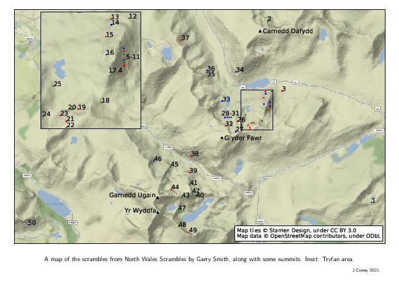
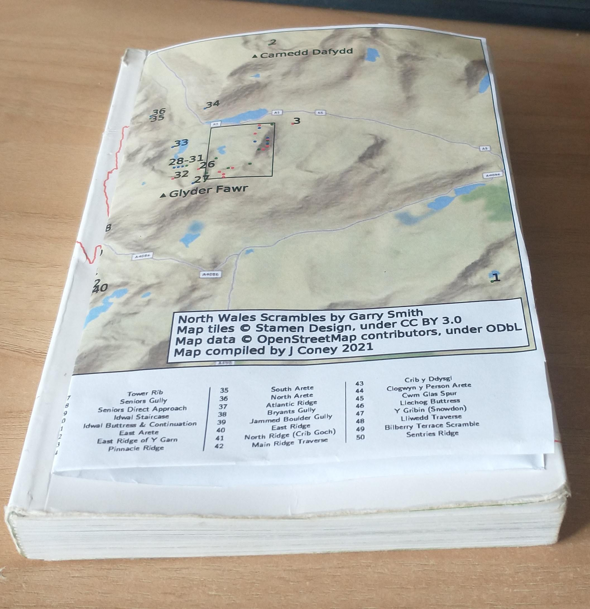

North Wales Scrambles Map
North Wales Scrambles Map
The guidebook to 50 scrambles in North Wales by Garry Smith (ISBN 978-0-9929692-0-2) lacks an overview map showing the location of all the scrambles contained within the guide.
I've had a go at making a pdf pull-out-and-keep map that should fit within a copy of the guidebook, when folded in half.
Don't scale the pdf to your printer paper otherwise it won't fit.
There are two flavours, one using Stamen Maps, and one using Mapbox. The colours (green/blue/red) refer to grade 1/2/3 scrambles, as coloured in the guidebook.
Let me know what you think.
Stamen Map (PDF, 708 KB)
Mapbox Map (PDF, 572 KB)


If there's something you want to customise for your own purpose, the python script and tex file are on Github.
Stamen map tiles by Stamen Design, under CC BY 3.0. Data by OpenStreetMap, under ODbL.
The Mapbox map uses map data from Mapbox and OpenStreetMap and their data sources.